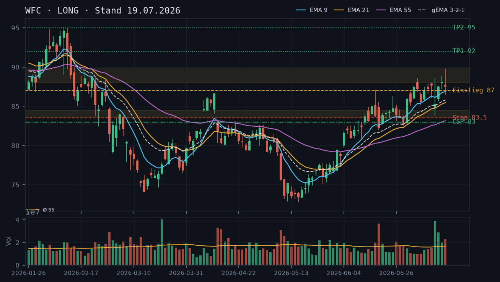
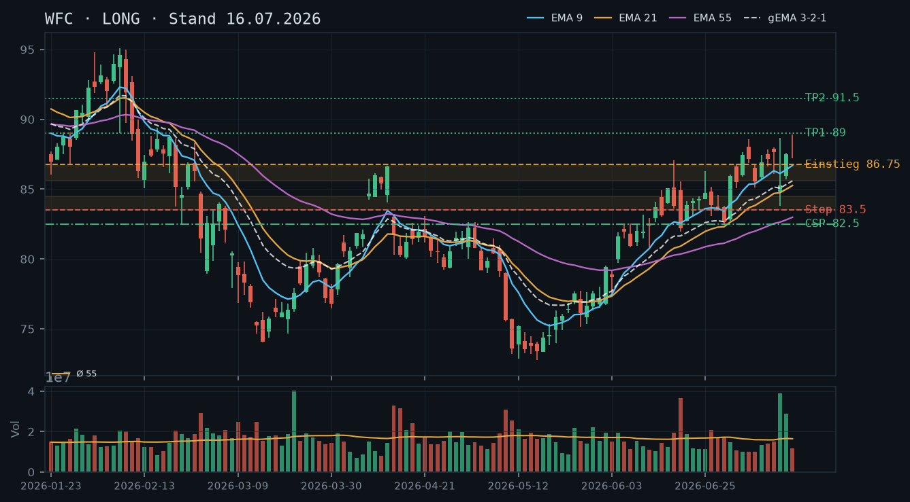
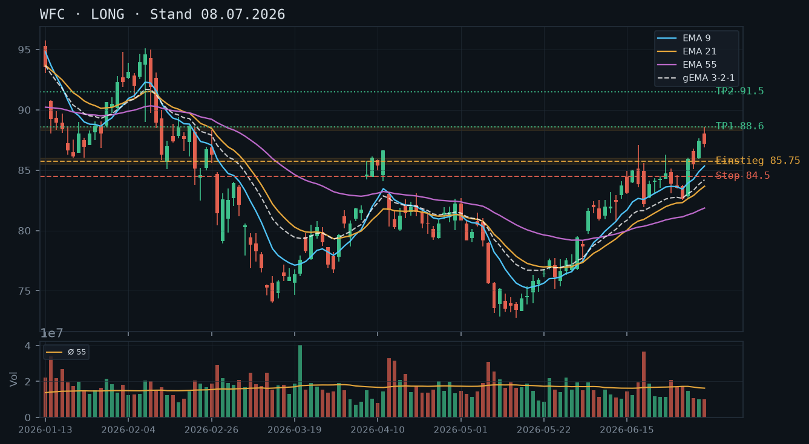

WFC
Analyse-Historie · neueste zuerstWFC konsolidiert auf hohem Niveau knapp unter dem Swing-Hoch bei 89,79 USD – der Aufwärtstrend ist intakt, die EMAs sind bullisch aufgestellt, und der IBKR-Aktienbestand von 200 Aktien ermöglicht erstmals den Einsatz von Covered Calls als primäres Stillhalter-Instrument.

1 · Trendstruktur
WFC befindet sich seit Ende Juni in einem klaren Aufwärtstrend mit sequenziell höheren Hochs (84,13 → 86,30 → 88,90 → 89,79 USD) und höheren Tiefs (83,05 → 83,46 → 83,83 → 85,65 → 85,89 USD). Das Swing-Hoch vom 17. Juli bei 89,79 USD ist der nächste relevante Widerstand; der letzte Schlusskurs (22. Juli) bei 86,42 USD zeigt eine kurze Abkühlung nach dem Test dieses Hochs. Der aktuelle Kurs (~86,99 USD laut IBKR) hat sich bereits wieder leicht erholt. Support-Zone 85,65–86,50 USD (Tiefs 15.–22. Juli) fungiert als erste Auffanglinie, darunter die bestätigte Zone 83,50–84,50 USD (aus früheren Analysen, Earnings-Tief 14. Juli 83,83 USD).
2 · Candlestick-Formationen
Die letzte Tageskerze vom 22. Juli zeigt eine klassische bearish engulfing-ähnliche Schwäche: Eröffnung bei 88,19 USD, kein nennenswertes neues Hoch (High = Open bei 88,19), aber ein deutlicher Close-Rückgang auf 86,42 USD – ein sog. Shooting-Star-Muster nahe der Widerstandszone um 88–89 USD. Volumen war mit rel. 0,92 leicht unterdurchschnittlich, was den Rückgang als Momentum-Abbau ohne Panik-Charakter einordnet. Die Vorkerzen (20.–21. Juli) zeigten Doji-ähnliche Strukturen mit Schlusskursen zwischen 86,33 und 87,74 USD – insgesamt eine Konsolidierungsphase auf hohem Niveau.
3 · EMA-Lage (9 / 21 / 55)
Die EMA-Aufstellung ist klar bullisch: EMA9 (86,86) > EMA21 (85,82) > EMA55 (83,54) in korrekter Reihenfolge. Der gema_321 liegt bei 85,96 USD und steigt stetig – der Kurs notiert knapp darüber (~86,99 USD), was eine gesunde Nähersituation ohne Überdehnung signalisiert. EMA9 und gema_321 laufen eng zusammen und bilden eine dynamische Support-Cluster-Zone bei ~85,96–86,86 USD. Keine Kompressions-Artefakte, keine Kreuzungsgefahren in Sicht – die EMA-Struktur bestätigt den bullischen Bias aus allen drei Voranalysen.
4 · Trade-Setup
| Richtung | Long |
| Einstieg | 87,50 (Stop-Buy über das Hoch vom 21. Juli / Momentum-Bestätigung) oder Limit 86,00–86,50 (Pullback zur gema_321-Zone ~85,96) |
| Stop | 85,50 (unterhalb der jüngsten Konsolidierungstiefs 15.–22. Juli und des EMA9) |
| Ziel | 90,00–91,00 (Projektion: Breakout über 89,79, nächste Widerstandszone aus Feb 2026 bei ~91,50) |
| CRV | 2.5 : 1 (Pullback-Einstieg 86,25, Stop 85,50, Ziel 90,00) |
5 · Stillhalter (max. 12 Tage)
Erstmals ist laut IBKR-Snapshot ein Aktienbestand von 200 Aktien vorhanden – damit rückt der Covered Call als primäres Stillhalter-Instrument ins Zentrum. Der Kurs konsolidiert direkt unterhalb des Swing-Hochs bei 89,79 USD: Ein CC knapp oberhalb dieses Widerstands ermöglicht Prämieneinnahme bei gleichzeitiger Aufwärtsbeteiligung bis zur Zone. Der CSP bleibt als sekundäres Instrument für zusätzliche Positionserweiterung unterhalb der gut verankerten 83,50–84,50 USD-Support-Zone valide.
| Geschäft | Cash-Secured Put |
| Strike | 83.0 |
| Puffer | 4.6 % |
| Zone | unterhalb der mehrfach bestätigten Support-Zone 83,50–84,50 USD (Earnings-Tief 14. Juli 83,83 USD, getestet 25./29./30. Juni, 14. Juli – insgesamt fünf Tests) |
| Verfall bis | 2026-08-01 (9 Tage, nächster Standard-Freitag) |
| Begründung | Strike 83,00 USD liegt ca. 4,6% unter dem aktuellen Kurs (~86,99 USD) und rund 0,50 USD unterhalb des härtesten Tiefpunkt-Clusters 83,50–84,50 USD. Das Earnings-Tief vom 14. Juli (83,83 USD, rel. Volumen 2,37x) ist der signifikanteste Test dieser Zone – sie wurde standhaft gehalten. Eine Andienung zu 83,00 USD wäre charttechnisch akzeptabel, da der Aufwärtstrend strukturell noch intakt wäre. Prüfe in der Optionskette (Verfall 01. August): Liegt die Prämie für den 83,00er CSP bei mind. 0,20–0,35 USD (Mid)? Delta sollte zwischen -0,12 und -0,20 liegen. Liquidität bei WFC auf geraden Strike-Stufen in der Regel gut – Spread auf Enge prüfen. |
| Geschäft | Covered Call |
| Strike | 90.0 |
| Puffer | 3.5 % |
| Zone | oberhalb des Swing-Hochs vom 17. Juli bei 89,79 USD und der Feb-2026-Widerstandszone 89–91 USD |
| Verfall bis | 2026-08-01 (9 Tage, nächster Standard-Freitag) |
| Begründung | Strike 90,00 USD liegt ca. 3,5% über dem aktuellen Kurs (~86,99 USD) und knapp oberhalb des bestätigten Swing-Hochs vom 17. Juli (89,79 USD). Dieser Bereich fungiert als nächster natürlicher Widerstand – ein Covered Call hier ermöglicht Prämieneinnahme, ohne die unmittelbare Aufwärtsbewegung zu kappen. Der 200-Aktien-Bestand (laut IBKR-Snapshot) deckt 2 Kontrakte vollständig ab – kein Naked-Call-Risiko. Eine Abgabe der Aktien zu 90,00 USD wäre charttechnisch sinnvoll (Widerstandszone) und preislich attraktiv. Prüfe in der Optionskette: Liegt die Prämie für den 90,00er CC (Verfall 01. August) bei mind. 0,35–0,60 USD (Mid)? Delta sollte zwischen +0,25 und +0,35 liegen. Sollte WFC über 89,79 USD ausbrechen und dynamisch auf 90+ USD laufen, Roll-Trigger beachten (siehe detail_html). |
Bestand: Laut IBKR-Snapshot (11:38 Uhr, 23. Juli) besteht ein Aktienbestand in WFC. Keine offenen Optionspositionen vorhanden – kein Roll-Bedarf. Der Aktienbestand reicht für bis zu 2 Covered-Call-Kontrakte (je 100 Aktien). Empfehlung: CC-Eröffnung mit Verfall 01. August, Strike 90,00 USD – maximal 2 Kontrakte zur vollen Deckung des Bestands.
Ausführliche Analyse vom 23.07.2026 anzeigen
WFC – Detailanalyse 23. Juli 2026
1. Trendstruktur & Kursmarken
Der Aufwärtstrend seit dem Tief vom 11. Mai 2026 (73,18 USD, rel. Volumen 1,41x) ist strukturell intakt. Die relevante Sequenz höherer Hochs und Tiefs seit Ende Juni:
- Tief 30. Juni: 82,52 USD
- Hoch 17. Juli: 89,79 USD (aktuelles Swing-Hoch, unbestätigter Widerstand nach erstem Test)
- Konsolidierungs-Tiefs 20.–22. Juli: 85,89–86,25 USD – diese Zone ist als erste dynamische Unterstützung zu werten
- Bestätigte Support-Zone: 83,50–84,50 USD (mind. fünf Tests: 25. Juni, 29. Juni, 30. Juni, 14. Juli-Earnings-Tief 83,83 USD, 15. Juli-Tief 85,70 USD markiert Übergang zur oberen Zone)
Der Kurs befindet sich aktuell in einer kurzen Pause nach dem Anlaufen des 89,79-USD-Widerstands. Das Volumen in den letzten drei Kerzen (0,92–1,05x Durchschnitt) ist unauffällig – kein Verteilungssignal. Die Abkühlung ist als gesunde Konsolidierung zu interpretieren, kein Trendbruch.
2. Candlestick-Formationen – vertieft
Die Kerze vom 22. Juli ist besonders interessant: Open = High (88,19 USD), Close bei 86,42 USD. Dies entspricht einem Bearish Marubozu-Hybrid – der Markt lehnte das höhere Niveau sofort ab. Allerdings ist das Volumen mit rel. 0,92 leicht unterdurchschnittlich, was die Aussagekraft abschwächt. Ein echter Distributions-Tag würde erhöhtes Volumen beim Ausverkauf zeigen (vgl. 14. Juli: rel. 2,37x mit massiver Intraday-Range).
Die Kerzen vom 20./21. Juli (Closes 86,33 / 87,74 USD) zeigen eine Intraday-Volatilität ohne Richtungsklarheit – klassische Verdauungsphase nach dem Anlaufen des Widerstands. Kein bearisches Umkehrmuster auf Daily-Basis bestätigt.
3. EMA-Analyse – Konfluenz-Herleitung
EMA9 (86,86) – EMA21 (85,82) – EMA55 (83,54): Reihenfolge korrekt bullisch, kein Kompressions-Artefakt. Der gema_321 bei 85,96 USD ist die entscheidende dynamische Support-Linie. Der Kurs notiert mit ~86,99 USD (IBKR-Snapshot) gerade 1,03 USD über dem gema_321 – eine sehr enge Lage, die bei weiterer Konsolidierung kurzfristig einen Test des gema_321 (~85,96 USD) ermöglicht.
Konfluenz-Zone für Long-Einstiege: 85,82–86,86 USD (EMA21 bis EMA9) deckt sich mit den jüngsten Konsolidierungstiefs. Ein Pullback in diesen Bereich bei unterdurchschnittlichem Volumen ist der ideale Limit-Einstieg.
Die früheren Analysen (08.07., 16.07., 19.07.) haben die bullische EMA-Aufstellung korrekt identifiziert – diese Einschätzung wird vollumfänglich bestätigt. Der EMA-Verbund steigt weiterhin, keine Divergenz.
4. Trade-Setups – Alternativen A / B / C
Setup A (bevorzugt – Pullback-Limit):
- Einstieg: Limit 86,00–86,50 USD (Pullback zur EMA9/gema_321-Konfluenz)
- Stop: 85,50 USD (unterhalb der Konsolidierungstiefs und EMA9)
- Ziel 1: 89,50 USD (Swing-Hoch 89,79 minus Spread) → CRV ~4,3 : 1
- Ziel 2: 91,50 USD (Feb-2026-Widerstandszone) → CRV ~7,5 : 1
Setup B (Breakout-Momentum):
- Einstieg: Stop-Buy 90,10 USD (Breakout über 89,79 USD mit Bestätigung, idealerweise rel. Volumen >1,3x)
- Stop: 88,50 USD (unterhalb Ausbruchs-Basis)
- Ziel: 93,00–94,00 USD (Projektion aus Range 83,50–89,79 USD, Amplitude ~6,30 USD ab Breakout)
- CRV: ~1,9 : 1 – nur bei klarem Volumen-Ausbruch interessant
Setup C (kein Trade / Warten): Sollte der Kurs unter 85,50 USD schließen und EMA9 bei steigendem Volumen unterschreiten, ist Abwarten bis zur 83,50–84,50-USD-Zone angezeigt. Dort würde Long-Wiedereinstieg bei bestätigtem Support evaluiert.
5. Stillhalter-Setups – Detailanalyse (Schwerpunkt)
5a. Covered Call – Strike 90,00 USD, Verfall 01. August 2026
Zonen-Herleitung: Das Swing-Hoch vom 17. Juli bei 89,79 USD ist der erste und bislang einzige Test dieses Niveaus – technisch ein unbestätigter Widerstandsbereich. Allerdings deckt er sich mit der bereits in früheren Analysen genannten Feb-2026-Widerstandszone um 89–91 USD. Strike 90,00 USD liegt exakt an dieser Konfluenz und bietet einen Puffer von ca. 3,5% über dem aktuellen Kurs.
Andienungsszenario: Eine Abgabe der Aktien zu 90,00 USD wäre charttechnisch sehr attraktiv – der Verkauf würde nahe des aktuellen Widerstands erfolgen, wo Momentum tendenziell nachlässt. Nach Andienung wäre ein Re-Entry bei Pullback zur 85,50–86,50-USD-Zone möglich.
Roll-Trigger: Sollte WFC über 89,79 USD mit erhöhtem Volumen (>1,3x Durchschnitt) ausbrechen und der CC ins Geld laufen, ist ein Roll-up-and-out sinnvoll: Schließen des 90,00er CC und Verkauf eines neuen CC bei 92,50 USD oder 93,00 USD mit Verfall 08. August (max. 12 Tage). Bedingung: Der Roll muss mindestens kostenneutral oder mit Nettogutschrift durchführbar sein. Bewegt sich der CC-Strike nur kurz über 90,00 USD ohne Volumenbestätigung, zunächst halten und auf Zeitwerterosion setzen.
In der Optionskette prüfen: Prämie des 90,00er CC (Verfall 01. August) sollte mind. 0,35–0,60 USD (Mid) betragen. Delta idealerweise zwischen +0,25 und +0,35. Spread-Enge prüfen – WFC hat in der Regel gute Liquidität auf geraden Strike-Stufen.
5b. Cash-Secured Put – Strike 83,00 USD, Verfall 01. August 2026
Zonen-Herleitung: Die Support-Zone 83,50–84,50 USD wurde in der Analyse vom 16. Juli als bestätigt deklariert (vier Tests) und am 19. Juli auf fünf Tests aktualisiert. Diese Einschätzung bleibt vollständig gültig. Strike 83,00 USD liegt 0,50 USD unterhalb des härtesten Tiefpunkts (Earnings-Tief 14. Juli: 83,83 USD bei rel. Volumen 2,37x). Das heißt: Die Zone hat sogar unter extremem Verkaufsdruck (Earnings-Enttäuschung mit mehr als doppeltem Durchschnittsvolumen) gehalten.
Andienungsszenario: Kauf zu 83,00 USD wäre fundamental und charttechnisch akzeptabel – das Niveau entspricht dem Earnings-Tief des letzten Quartals. Der Aufwärtstrend wäre bei Andienung noch intakt, ein Recovery-Trade von 83,00 USD in Richtung 87–89 USD hätte attraktives CRV. Zu prüfen: Erhöht ein zusätzlicher CSP den Aktienbestand in einer Weise, die das Gesamt-Risiko-Exposure im Depot übersteigt? Diese Entscheidung liegt beim Trader.
Roll-Trigger: Unterschreitet WFC die 84,50-USD-Marke (obere Kante der Support-Zone) auf Schlusskursbasis bei erhöhtem Volumen (>1,3x), ist der CSP zu evaluieren – nicht sofort rollen, sondern zunächst auf Zonenstärke vertrauen. Unterschreitung von 83,50 USD auf Schlusskursbasis wäre der definitive Roll-Trigger: Roll-down auf 81,00 USD mit Verfall 08. August und Verlängerung des Zeitpuffers. Ein Roll-down unter 80,00 USD ist bei diesem Trend-Setup nicht angezeigt.
In der Optionskette prüfen: Prämie mind. 0,20–0,35 USD (Mid) für sinnvolle Rendite. Delta zwischen -0,12 und -0,20. Die Prämie in Relation zum Puffer (~4,6%) prüfen – bei nur 9 DTE sollte die annualisierte Rendite auf den Strike-Wert über 10% liegen, sonst ist das Geschäft nicht attraktiv genug.
5c. Abgleich mit historischen Analysen
Die CSP-Empfehlung bei 82,50 USD (Analyse 16.07.) und 83,00 USD (Analyse 19.07.) war sachlich korrekt – der Kurs hat sich nicht annähernd diesen Strikes genähert. Der Strike-Bereich 83,00 USD bleibt weiterhin valide. Neu hinzugekommen ist der Covered Call als primäres Instrument, da der IBKR-Snapshot erstmals einen Aktienbestand ausweist. Dies ist die wesentliche Veränderung gegenüber allen drei Voranalysen (16.07. und 19.07. hatten CC explizit ausgeschlossen mangels Aktienbestand). Die Zielprojektion 91,50 USD aus der Analyse vom 08.07. bleibt als Fernziel bestehen und wird durch Setup A/B gestützt.
WFC setzt den intakten Aufwärtstrend fort – nach dem Earnings-Dip am 14. Juli (rel. Volumen 2.37x) wurde der Kurs zügig zurückgekauft und testet nun die 88-USD-Marke; der Trend bleibt bullisch mit sauber aufgestellten EMAs.

1 · Trendstruktur
WFC zeigt eine klare Sequenz steigender Hochs und Tiefs seit dem Tief vom 11./12. Mai (~73,50 USD). Das jüngste Swing-Hoch liegt bei 89,79 USD (17. Juli), das letzte relevante Swing-Tief bei 83,83 USD (Earnings-Dip, 14. Juli) – dieses wurde zügig zurückgekauft und bestätigt die Trendstruktur. Der Bereich 83,50–84,50 USD fungiert als mehrfach bestätigte Support-Zone (Tests: 25./29./30. Juni, 14. Juli-Tief 83,83 USD) und ist als tragfähig einzustufen. Widerstand: Die 88–90 USD-Zone ist der nächste relevante Bereich ohne klaren historischen Anker – der Kurs befindet sich in neuen Hochgebieten, was Vorsicht bei Covered-Call-Strikes gebietet.
2 · Candlestick-Formationen
Die letzten vier Kerzen (14.–17. Juli) zeigen ein klassisches V-Recovery-Muster: Der Earnings-Gap-Down am 14. Juli (rel. Volumen 2,37x, Tief 83,83 USD) wurde sofort am 15. Juli mit einer bullischen Aufwärtskerze konterkariert (+2,22 USD, rel. Volumen 1,73x). Der 16. Juli schloss mit 88,07 USD nahe dem Tageshoch – Stärke. Der 17. Juli lieferte eine leicht schwächere Kerze (Doji-ähnlich, Close 87,51 vs. High 89,79) mit erhöhtem Volumen (1,36x) – ein kurzfristiges Atemholen nach dem Vorstoß auf neue Hochs, noch kein Umkehrsignal.
3 · EMA-Lage (9 / 21 / 55)
Die EMA-Aufstellung ist sauber bullisch: EMA9 (86,89) > EMA21 (85,48) > EMA55 (83,16), alle steigend. Der gema_321 bei 85,80 USD liegt klar unterhalb des Kurses (88,07 USD) – der gewichtete EMA-Verbund bestätigt die Trendstärke. Der Abstand vom Close (87,51 am 17. Juli) zum EMA9 beträgt ca. 0,62 USD – kompakt, aber noch kein überhitztes Streck-Signal. Alle EMAs zeigen steigende Verläufe, kein Compression-Artefakt erkennbar.
4 · Trade-Setup
| Richtung | Long |
| Einstieg | 88.50 (Stop-Buy über das Hoch vom 16. Juli / Breakout-Bestätigung) oder Limit 86.80–87.20 (Pullback zum EMA9 ~86.89) |
| Stop | 83.50 (unterhalb der bestätigten Support-Zone 83.50–84.50 USD und des Earnings-Tiefs 83.83 USD) |
| Ziel | 93.00–94.00 (technische Projektion: Ausbruch aus 83.50–89.79 Range, ~6.30 USD Amplitude, projiziert ab Breakout) |
| CRV | 2.3 : 1 (Pullback-Einstieg 87.00, Stop 83.50, Ziel 95.00) |
5 · Stillhalter (max. 12 Tage)
Der Trend ist klar bullisch, das Earnings-Tief wurde absorbiert und der Kurs drückt gegen neue Hochs. Das Umfeld begünstigt weiterhin Cash-Secured Puts unterhalb der gut verankerten Support-Zone 83,50–84,50 USD. Ein Covered Call entfällt, da laut IBKR-Snapshot kein Aktienbestand vorhanden ist – ein Naked Call wäre hier nicht angemessen.
| Geschäft | Cash-Secured Put |
| Strike | 83.0 |
| Puffer | 5.8 % |
| Zone | unterhalb der mehrfach bestätigten Support-Zone 83,50–84,50 USD (getestet 25. Juni, 29. Juni, 30. Juni, Earnings-Tief 14. Juli bei 83,83 USD) |
| Verfall bis | 2026-07-25 (6 Tage) |
| Begründung | Strike 83,00 USD liegt ca. 5,8% unterhalb des aktuellen Kursniveaus (~88,07 USD) und rund 0,50 USD unterhalb des engmaschig getesteten Support-Clusters 83,50–84,50 USD. Die Zone hat fünf Tiefpunkt-Tests überstanden – das Earnings-Tief am 14. Juli (83,83 USD, rel. Volumen 2,37x) ist der härteste Test und wurde standhaft gehalten. Eine Andienung zu 83,00 USD wäre charttechnisch akzeptabel: Der Kurs läge auf dem Earnings-Tief-Niveau, der Trend wäre noch intakt. Prüfe in der Optionskette (Verfall 25. Juli): Liegt die Prämie für den 83,00er CSP bei mindestens 0,25–0,40 USD (Mid)? Delta sollte idealerweise zwischen -0,15 und -0,25 liegen. Liquidität bei WFC in geraden Strike-Schritten in der Regel gut – Spread prüfen. |
Bestand: Laut IBKR-Snapshot keine bestehenden Aktien- oder Optionspositionen in WFC zum Zeitpunkt der Analyse (07:11 Uhr). Kein Roll-Bedarf.
Ausführliche Analyse vom 19.07.2026 anzeigen
WFC – Detailanalyse 19. Juli 2026
1. Trendstruktur – Abgleich mit Voranalysen
Die Voranalyse vom 16. Juli (LONG) wird vollständig bestätigt. WFC hat seit dem Tief vom 11./12. Mai 2026 (~73,50 USD) eine makellose Sequenz steigender Hochs und Tiefs entwickelt: Mai-Tief 72,87 → Juni-Tief 82,52 → Earnings-Tief 83,83 (14. Juli) – jedes Tief höher als das vorherige. Auf der Hochseite: 77,67 (26. Mai) → 87,08 (17. Juni) → 89,79 (17. Juli). Neues Allzeit-Hoch im aktuellen Trendkanal.
Die Support-Zone 83,50–84,50 USD hat sich als Schlüsselzone etabliert: Tests am 25. Juni (Low 84,28), 29. Juni (Low 83,47), 30. Juni (Low 82,52 – einmaliger Undershot, sofortige Erholung), 14. Juli-Earnings-Tief 83,83 USD bei massivem Volumen (2,37x Schnitt). Diese Zone gilt als bestätigt und tragfähig. Die Voranalysen haben diese Zone korrekt identifiziert.
Der Widerstandsbereich 88–90 USD bleibt diffus – kein klarer historischer Anker, da WFC sich in neuen Hochgebieten bewegt. Das Hoch vom 17. Juli (89,79 USD) ist der aktuelle technische Widerstand; ein Tagesschluss darüber würde Raum bis 93–94 USD (Projektionsziel) öffnen.
2. Candlestick-Formationen – V-Recovery und Atemholen
Der Earnings-Gap-Down am 14. Juli (Open 84,85, Low 83,83, Close 85,29 – rel. Volumen 2,37x) war ein signifikanter Schock, aber kein Trendbruch. Bereits am 15. Juli (Close 87,51, rel. Volumen 1,73x) wurde der Gap fast vollständig geschlossen – eine klassische Bullish Engulfing-artige Reaktion, die institutionelle Kaufbereitschaft signalisiert.
Der 16. Juli schloss mit 88,07 nahe dem Tageshoch (88,90) – starke Tageskerze. Der 17. Juli zeigt eine Kerze mit langem Oberschatten (High 89,79, Close 87,51) bei erhöhtem Volumen (1,36x): kurzfristiger Abverkauf von den Tageshochs, aber kein bearishes Umkehrsignal. Eher ein Shooting-Star-Kandidat – jedoch im Aufwärtstrend erst nach Bestätigung am nächsten Tag relevant. Der aktuelle Kurs (88,07 USD laut IBKR-Snapshot vom 19. Juli 12:11 Uhr) deutet darauf hin, dass die Kerze vom 17. Juli kein Follow-Through nach unten generiert hat.
3. EMA-Analyse – Sauber bullisch, kein Compression-Artefakt
EMA-Reihenfolge: EMA9 (86,89) > EMA21 (85,48) > EMA55 (83,16) – klassisch bullisch, alle steigend. Der gema_321 (85,80) bildet die gewichtete Unterstützungslinie; der Abstand Kurs (87,51/88,07) zum gema_321 beträgt ca. 2,0–2,3 USD – noch im gesunden Bereich, keine Überhitzung.
Bemerkenswert: Noch am 20. März 2026 lagen die EMAs in umgekehrter Reihenfolge (EMA9 77,22 < EMA21 80,04 < EMA55 84,38) – der Trend hat sich in vier Monaten vollständig gedreht. Der EMA55 (83,16) liegt nunmehr exakt in der Support-Zone 83,50–84,50 USD und fungiert als dynamische Unterstützung.
4. Trade-Setups im Detail
Setup A – Breakout-Einstieg (aggressiver):
Einstieg: 89,90 USD (Stop-Buy über das Hoch vom 17. Juli 89,79 USD mit Puffer)
Stop: 83,50 USD (unterhalb Support-Zone)
Ziel 1: 93,00 USD (erste Projektion)
Ziel 2: 95,00 USD (erweiterte Projektion, Amplitude der vorherigen Bewegung)
CRV zu Ziel 1: (93,00 – 89,90) / (89,90 – 83,50) = 3,10 / 6,40 = 0,48:1 – ungünstig beim Breakout-Einstieg wegen breitem Stop
CRV zu Ziel 2: (95,00 – 89,90) / (89,90 – 83,50) = 5,10 / 6,40 = 0,80:1 – noch immer unattraktiv
Fazit Setup A: Nur sinnvoll mit Stop-Anpassung nach Breakout (Trail auf 87,00 USD nach Tagesschluss über 89,80 USD).
Setup B – Pullback-Einstieg zum EMA9 (bevorzugt):
Einstieg: 86,80–87,20 USD (Pullback zum EMA9 ~86,89 USD, Limit-Order)
Stop: 83,50 USD (unterhalb Support-Zone und EMA55)
Ziel 1: 92,00 USD
Ziel 2: 95,00 USD
CRV zu Ziel 1: (92,00 – 87,00) / (87,00 – 83,50) = 5,00 / 3,50 = 1,43:1
CRV zu Ziel 2: (95,00 – 87,00) / (87,00 – 83,50) = 8,00 / 3,50 = 2,29:1 – attraktiv
Fazit Setup B: Dies ist das bevorzugte Setup. Geduld zahlt sich aus; der EMA9 hat im Trend als dynamischer Support funktioniert (siehe Konsolidierungen Ende Juni/Anfang Juli).
Setup C – Konservativ am gema_321:
Einstieg: 85,50–85,80 USD (gema_321 ~85,80 USD)
Stop: 83,50 USD
Ziel: 92,00 USD
CRV: (92,00 – 85,65) / (85,65 – 83,50) = 6,35 / 2,15 = 2,95:1 – sehr attraktiv, aber Einstieg erfordert stärkeren Pullback als wahrscheinlich
5. Stillhalter-Setup – Detailanalyse
IBKR-Snapshot-Status: Kein Aktienbestand, keine offenen Optionspositionen in WFC (Stand 19. Juli 12:11 Uhr). Der IBKR-Snapshot enthält keine Optionsketten-Daten (Prämien, IV, Greeks, OI) – diese müssen manuell geprüft werden.
Cash-Secured Put – Strike 83,00 USD, Verfall 25. Juli 2026 (6 Tage):
Zonen-Herleitung: Der Strike 83,00 USD wurde durch folgende Konfluenz abgeleitet:
- Die Support-Zone 83,50–84,50 USD hat vier bestätigte Tests (25. Juni Low 84,28; 29. Juni Low 83,47; 14. Juli Earnings-Low 83,83 bei 2,37x Volumen)
- Der EMA55 liegt per 17. Juli bei 83,16 USD – konvergiert mit dem Strike und erhöht die Konfluenz als dynamische Unterstützung
- Ein Strike unterhalb der Zone (83,00 < 83,50) gibt der Zone Raum als Puffer vor dem Strike – korrekte Stillhalter-Logik
- Der Puffer von ~5,8% zum aktuellen Kurs (~88,07 USD) ist bei 6 Tagen Restlaufzeit großzügig und technisch gerechtfertigt
Andienungsszenario: Würde WFC bis zum 25. Juli auf 83,00 USD fallen, befände sich der Kurs im Bereich des Earnings-Tiefs (83,83 USD) und des EMA55 (83,16 USD). Das wäre ein ca. -5,8% Drawdown in 6 Tagen – möglich, aber erforderte einen deutlichen Trendbruch. Ein Kauf zu 83,00 USD wäre charttechnisch und fundamental vertretbar, da der übergeordnete Aufwärtstrend noch intakt wäre. Das Andienungsrisiko ist moderat und akzeptabel.
Was in der Optionskette zu prüfen ist:
- Prämie: Bei 6 Tagen Laufzeit und ~5,8% OTM-Strike: Ziel-Prämie mind. 0,20–0,35 USD (Mid). Liegt die Prämie darunter, ist das Rendite-/Risikoprofil nicht attraktiv genug.
- Delta: Sollte idealerweise zwischen -0,12 und -0,22 liegen. Höheres Delta deutet auf zu geringen Puffer hin.
- Spread/Liquidität: WFC ist ein liquider Large-Cap; bei geraden Strike-Schritten (82,50 oder 83,00) sollte der Bid/Ask-Spread unter 0,10 USD liegen.
- IV-Umfeld: Nach dem Earnings-Event (14. Juli) ist die Implied Volatility typischerweise rückläufig (IV Crush) – prüfe, ob die Prämie noch ausreichend ist, um den Trade attraktiv zu machen.
Roll-Trigger: Fällt WFC unter 85,00 USD (Nähe EMA9/gema_321 und Annäherung an die Support-Zone), ist zu prüfen: Entweder Position schließen (Stop-Logik) oder auf den übernächsten Freitag (1. August 2026) rollen mit tieferem Strike (z.B. 81,00 USD), falls die Trendstruktur noch intakt ist. Ein Roll ist nur sinnvoll, wenn der Trend nicht gebrochen ist – bei einem Tagesschluss unter 83,50 USD wäre die Position zu schließen.
Covered Call: Kein Aktienbestand vorhanden (IBKR-Snapshot bestätigt 0 Aktien). Ein Naked Call würde das Risikoprofil fundamental verändern und ist bei der deklarierten moderaten Risikotoleranz nicht geeignet. CC-Setup entfällt daher vollständig.
WFC hält den Aufwärtstrend trotz des Earnings-Sell-off vom 14. Juli aufrecht – der Kurs notiert über allen EMAs und zeigt Stärke; der CSP unterhalb der 84er-Support-Zone ist das bevorzugte Stillhalter-Setup.

1 · Trendstruktur
WFC befindet sich seit dem Tief vom 11. Mai (73,19 USD) in einem klaren Aufwärtstrend mit einer Abfolge steigender Hochs und steigender Tiefs. Das Sequenz-Hoch liegt aktuell bei 88,90 USD (16. Juli), das letzte relevante Swing-Tief wurde am 14. Juli bei 83,83 USD gesetzt – exakt an der Zone 83,50–84,50 USD, die bereits Ende Juni/Anfang Juli als Support fungiert hat. Die Trendstruktur ist intakt: Jedes neue Hoch wird zwar leicht angefochten, aber der Kurs erholt sich konsequent. Die frühere Analyse vom 08.07. (Long-Empfehlung, Ziel 91,50 USD) ist durch den Earnings-Dip am 14. Juli kurzzeitig angespannt worden, der Trend ist jedoch nicht gebrochen – das Tief vom 14. Juli (83,83 USD) liegt klar über dem damaligen Stop (84,80 USD lag leicht darüber; die Zone wurde aber intraday kurz unterschritten und sofort zurückgekauft).
2 · Candlestick-Formationen
Die letzten drei Kerzen erzählen eine bullische Geschichte: Am 14. Juli eine massive Hammer-ähnliche Volatilitätskerze (High 88,68 / Low 83,83, Close 85,29) mit dem 2,37-fachen Durchschnittsvolumen – klassischer Earnings-Shake-Out mit starker Erholung. Am 15. Juli eine solide bullische Kerze (Close 87,51, rel. Volumen 1,73) die den Rückkauf bestätigt. Am 16. Juli eine weitere bullische Kerze (Close 87,92, High 88,90) – die Kerze testet die 89er-Marke, das Volumen ist mit 0,70 allerdings unterdurchschnittlich, was auf abnehmenden Kaufdruck an der Resistance hindeutet. Insgesamt: Bullisches Reversal-Muster nach dem Earnings-Dip, aber die dünne Kerze am Allzeithoch-Test mahnt zur Vorsicht.
3 · EMA-Lage (9 / 21 / 55)
Die EMA-Aufstellung ist klar bullisch: EMA9 (86,70) > EMA21 (85,26) > EMA55 (82,99), der gema_321 liegt bei 85,60 – der aktuelle Close (87,92) notiert deutlich über dem gesamten EMA-Verbund. Der Spread zwischen Kurs und gema_321 beträgt ca. 2,32 USD (~2,6%), was eine gesunde aber nicht überhitzte Ausdehnung zeigt. Alle drei EMAs steigen an, der gema_321 fungiert als dynamische Supportstruktur im Bereich 85,60 USD – diese Zone ist der erste Puffer bei einem weiteren Rücksetzer.
4 · Trade-Setup
| Richtung | Long |
| Einstieg | 88.00–88.10 (Breakout-Bestätigung über 88,90 Tages-High mit erhöhtem Volumen) oder Limit 86,50–87,00 (Pullback zum gema_321 / EMA9) |
| Stop | 83.50 (unterhalb des Earnings-Tiefs vom 14. Juli und der Swing-Support-Zone 83,50–84,50) |
| Ziel | 91.50 (Projektion aus der Aufwärtsbewegung, Widerstandszone Feb 2026) |
| CRV | 2.4 : 1 (Pullback-Einstieg bei 86,75, Stop 83,50, Ziel 91,50) |
5 · Stillhalter (max. 12 Tage)
Der Trend ist bullisch und der jüngste Earnings-Dip wurde zügig zurückgekauft – ideales Umfeld für Cash-Secured Puts unterhalb der bestätigten Support-Zone 83,50–84,50 USD. Ein Covered Call auf aktuelle Positionen wäre erst bei einem Breakout über 89–90 USD sinnvoll, die Zone hat sich noch nicht als Widerstand etabliert.
| Geschäft | Cash-Secured Put |
| Strike | 82.5 |
| Puffer | 6.2 % |
| Zone | unterhalb der mehrfach bestätigten Support-Zone 83,50–84,50 USD (getestet 25. Juni, 29. Juni, 30. Juni, 14. Juli-Tief 83,83) |
| Verfall bis | 2026-07-25 (9 Tage, nächster Standard-Freitag) |
| Begründung | Strike 82,50 liegt ca. 6,2% unter dem aktuellen Schlusskurs (87,92) und ca. 1 USD unterhalb des mehrfach bestätigten Support-Clusters 83,50–84,50 USD. Die Zone hat vier Tiefpunkt-Tests (Ende Juni, Earnings-Dip 14. Juli) überstanden und ist damit als tragfähige Unterstützung qualifiziert. Eine Andienung zu 82,50 wäre fundamental und charttechnisch akzeptabel – der Kurs läge immer noch im intakten Aufwärtstrend. Prüfe in der Optionskette: Gibt die Prämie beim 82,50er CSP mit Verfall 25. Juli eine sinnvolle Rendite (Ziel: mind. 0,30–0,50 USD / ~0,35–0,57% auf den Strike-Wert)? Liquidität bei geraden 2,50er-Strike-Stufen bei WFC in der Regel vorhanden. |
Ausführliche Analyse vom 16.07.2026 anzeigen
WFC – Detailanalyse vom 16. Juli 2026
1. Trendstruktur & Abgleich mit der Analyse vom 08.07.2026
Die Long-Empfehlung vom 08.07. (Einstieg 87,50 Stop-Buy / Limit 85,50–86,00, Stop 84,80, Ziel 91,50) ist durch die Earnings-Reaktion am 14. Juli (rel. Volumen 2,37x) einem harten Stresstest ausgesetzt worden. Intraday wurde das Tief bei 83,83 USD markiert – unter dem damaligen Stop von 84,80 USD. Wer mit einem engen Day-Stop gearbeitet hat, wurde möglicherweise ausgestoppt. Entscheidend ist aber: Der Close am 14. Juli bei 85,29 und die starke Erholung am 15./16. Juli zeigen, dass der Rückkauf sofort einsetzte. Das Sequenz-Tief vom 25. Juni (84,28) wurde intraday knapp gebrochen, der Schlusskurs aber nicht – die Trendstruktur ist damit formal intakt.
Das neue primäre Kursziel von 91,50 USD aus der Vorgabe-Analyse bleibt valide. Der nächste relevante Widerstand liegt bei ~89,00 USD (Annäherung an das Allzeit-Hochs des beobachteten Zeitraums), darüber bei ca. 91–92 USD (historische Widerstandszone Feb/März 2026 im Bereich um 82–86 ist überwunden; die nächste strukturelle Resistance liegt im Bereich 90–92 USD basierend auf dem vorherigen Hochpunkt-Cluster).
2. Candlestick-Formationen im Detail
Der 14. Juli verdient besondere Aufmerksamkeit: Eröffnung 84,85, Intraday-Tief 83,83 (Earnings-Reaktion), Intraday-Hoch 88,68, Schlusskurs 85,29. Die Kerze hat eine massive Doji-/Hammer-Charakteristik mit einem langen unteren und oberen Docht – Ergebnis: Unsicherheit, aber mit bullischer Schlussauflösung. Das Volumen (2,37x Schnitt) zeigt institutionellen Umsatz – sowohl Verkauf als auch Rückkauf in einer einzigen Session. Die Folgekerze vom 15. Juli (Close 87,51, Volumen 1,73x) bestätigt den Rückkauf und schließt deutlich über dem Schlusskurs der Earnings-Kerze – das ist ein klassisches Bullish Engulfing / Continuation Signal nach dem Shake-Out. Heute (16. Juli) eine weitere bullische Kerze mit neuem Hoch bei 88,90, aber schwachem Volumen (0,70x) – das mahnt: Breakout-Volumen fehlt, die 89er-Marke könnte kurzfristig Widerstand bieten.
3. EMA-Analyse & gema_321
Vollständige bullische Staffelung: EMA9 (86,70) > EMA21 (85,26) > EMA55 (82,99). Der gewichtete Verbund gema_321 bei 85,60 USD ist der erste dynamische Support. Der Kurs (87,92) liegt 2,32 USD bzw. ~2,6% über dem gema_321 – keine überhitzte Ausdehnung, im Rahmen für eine Fortsetzung. Der EMA55 bei 82,99 fungiert als grobe Langfrist-Unterstützung und liegt deutlich unter dem CSP-Strike von 82,50 – das gibt dem Stillhalter-Setup zusätzlichen Rückhalt.
Trend der EMAs: Alle drei EMAs steigen seit Ende Mai kontinuierlich an, die Kreuzung EMA9 über EMA21 fand Anfang Juni statt und ist seither nicht in Frage gestellt worden. Kein Kompressions-Artefakt erkennbar – saubere bullische Staffelung.
4. Trade-Setups (Aktie)
Setup A – Pullback-Long (bevorzugt, moderates Risiko):
Einstieg: Limit 86,50–87,00 (Rücksetzer zum gema_321 / EMA9-Zone)
Stop: 83,50 (unter Earnings-Tief und Support-Zone)
Ziel 1: 89,00 (kurzfristig, Breakout-Test) – CRV ~0,9:1
Ziel 2: 91,50 (primäres Ziel) – CRV ~2,4:1
Hinweis: Warten auf Rücksetzer setzt voraus, dass die 86,50-Zone hält.
Setup B – Breakout-Long (aggressiv):
Einstieg: Stop-Buy bei 89,10 (Breakout über 88,90 Tages-High mit Volumen > 1,2x Schnitt)
Stop: 85,50 (unter gema_321)
Ziel: 91,50 – CRV ~1,0:1
Hinweis: Das schwache Volumen heute macht diesen Einstieg riskanter; ohne Volumenbestätigung kein Trade.
Setup C – Kein Trade / Abwarten:
Sollte WFC unter 85,00 USD zurückfallen ohne sofortige Erholung, wäre eine Neubewertung erforderlich. Ein Close unter 83,50 würde die Trendstruktur beschädigen.
5. Stillhalter-Schwerpunkt: CSP-Analyse
Cash-Secured Put 82,50 USD, Verfall 25. Juli 2026
Zonen-Herleitung: Die Zone 83,50–84,50 USD hat in den letzten drei Wochen vier signifikante Tests bestanden:
- 25. Juni: Tief 84,28 USD
- 29. Juni: Tief 83,47 USD
- 30. Juni: Tief 82,52 USD (kurzfristiger Ausbruch, sofortige Erholung)
- 14. Juli (Earnings): Tief 83,83 USD, Close 85,29 USD
Andienungsszenario: Eine Andienung zu 82,50 USD wäre charttechnisch akzeptabel – der EMA55 liegt bei 82,99 USD und bietet eine weitere dynamische Stütze. Fundamental ist WFC in einem soliden Bankensektor-Umfeld. Ein Kauf zu 82,50 USD entspricht einem Discount von ~6,2% zum aktuellen Kurs und liegt knapp unter der langfristigen EMA55-Unterstützung – ein Einstiegsniveau, das man für eine Aktienposition in Kauf nehmen könnte.
Roll-Trigger: Sollte WFC in der verbleibenden Laufzeit unter 84,50 USD fallen (oberes Ende der Support-Zone), ist eine defensive Reaktion angebracht: Entweder den Put zurückkaufen (Verlustbegrenzung) oder auf einen niedrigeren Strike / längere Laufzeit rollen. Ein Close unter 83,50 USD wäre ein klares Roll-Signal nach unten. Keinesfalls Nachkauf oder Halten ohne Plan unterhalb der Zone.
Was in der Optionskette zu prüfen ist:
- Prämie beim 82,50er Put (Verfall 25. Juli): Ziel mind. 0,30–0,50 USD für ein vernünftiges Rendite/Risiko-Verhältnis
- Implizite Volatilität: Nach Earnings typischerweise erhöht – das könnte die Prämie attraktiv machen (IV-Crush ist bei einer Woche Restlaufzeit post-Earnings noch spürbar)
- Bid/Ask-Spread bei 82,50er Strikes: WFC ist liquide, sollte kein Problem sein
- Open Interest und Volumen am Strike prüfen – enge Spreads bevorzugen
Covered Call: Aktuell kein empfohlenes CC-Setup. Die 89er-Marke ist noch nicht als Widerstand etabliert (erst ein einziger Test heute mit niedrigem Volumen). Ein CC bei 90,00 oder 92,50 hätte keinen ausreichenden technischen Anker. Sollte WFC in den nächsten Tagen die 89–90 USD-Zone mehrfach anlaufen und scheitern, kann ein CC bei 90,00 oder 92,50 evaluiert werden.
6. Risiken & Abweichungsszenarien
Das Hauptrisiko ist ein erneuter Rückfall unter 84,50 USD, der die Earnings-Reaktion als Selling-Opportunity neu definieren würde. Ein Close unter 83,50 USD würde die Trendstruktur ernsthaft in Frage stellen. Geopolitische oder Sektornews (Zinsentscheide, Bankenregulierung) können die technische Analyse kurzfristig überlagern – Position-Sizing entsprechend moderat halten.
WFC befindet sich in einem intakten Aufwärtstrend mit bullischer EMA-Aufstellung und testet den Bereich um 87 USD – ein Pullback bietet eine Long-Chance mit attraktivem CRV.

1 · Trendstruktur
WFC hat nach dem Tief bei ~72,77 USD (15. Mai 2026) eine klare Aufwärtsstruktur ausgebildet mit einer Serie höherer Tiefs und höherer Hochs. Das jüngste Mehrwochenhoch liegt bei 88,57 USD (07. Juli), der Kurs notiert deutlich über dem März-Tief von 74 USD. Wichtige Unterstützungen liegen bei 85,50 USD (vorheriger Ausbruchslevel) und 83,50 USD (ehem. Widerstandszone Mitte Juni).
2 · Candlestick-Formationen
Die letzte Kerze (07. Juli) zeigt einen bärischen Doji/Inside-Bar-Charakter: Eröffnung 88,03, Hoch 88,57, Schluss 87,18 – ein leichter Rücksetzer nach dem Aufwärtsimpuls vom Vortag. Die Kerze vom 06. Juli war eine starke Aufwärtskerze mit Schlusskurs 87,45 bei niedrigem relativen Volumen (0,60), was auf fehlende Verkäufer hindeutet. Insgesamt bullisches Muster im kurzfristigen Pullback.
3 · EMA-Lage (9 / 21 / 55)
Die EMA-Aufstellung ist klar bullisch: EMA9 (85,35) > EMA21 (83,67) > EMA55 (81,86), der gewichtete gema_321 liegt bei 84,21 – alle steigend. Der Kurs notiert deutlich über allen EMAs, was die Aufwärtsdynamik bestätigt. Ein gesunder Pullback auf den EMA9 (~85,35) wäre ein idealer Einstiegsbereich ohne Trendbruch.
4 · Trade-Setup
| Richtung | Long |
| Einstieg | 87.50 (Stop-Buy über das Hoch der letzten Kerze) oder Limit bei 85.50–86.00 (Pullback zum EMA9) |
| Stop | 84.80 (unterhalb der gema_321-Zone und des 25.-Juni-Tiefs) |
| Ziel | 91.50 (Kursziel aus Ausbruch-Projektion / Widerstandszone aus Feb 2026) |
| CRV | 2.5 : 1 |
Ausführliche Analyse vom 08.07.2026 anzeigen
WFC – Detailanalyse (Stand: 08. Juli 2026)
1. Trendstruktur
WFC hat nach dem Mehrmonatstief bei 72,77 USD am 15. Mai 2026 eine markante Umkehr vollzogen. Vom Hoch im Februar 2026 (~88,32 USD) setzte die Aktie in einem ausgeprägten Abwärtstrend bis auf 72,77 USD zurück (–18%). Seit dem Mai-Tief zeigt sich jedoch eine klar aufwärtsgerichtete Trendstruktur mit höheren Tiefs (72,77 → 75,18 → 76,34 → 80,83 → 82,52 → 83,47) und höheren Hochs (75,72 → 77,67 → 82,56 → 86,30 → 88,57).
Wichtige Levels:
- Widerstand: 88,57 USD (Mehrwochenhoch 07. Juli 2026)
- Widerstand: 88,32 USD (Februar-Hoch 2026) – Schlüsselmarke aus altem ATH-Bereich
- Support: 85,50–86,00 USD (Breakout-Level vom 01. Juli, ex-Widerstand)
- Support: 83,50–84,00 USD (Konsolidierungszone Mitte-Ende Juni)
- Support: 82,50–83,00 USD (EMA21-Bereich, dynamische Unterstützung)
- Starke Unterstützung: 80,00 USD (psychologisch + EMA55-Nähe)
Der übergeordnete Trend hat sich von bärisch auf bullisch gedreht. Das Februar-Hoch bei 88,32 USD ist nun die entscheidende Hürde; ein nachhaltiger Ausbruch darüber würde neues Kaufsignal generieren.
2. Candlestick-Formationen
Die letzten fünf Kerzen zeigen folgendes Bild:
- 01. Juli: Starke Aufwärtskerze (82,83 → 85,94), Ausbruch aus der Konsolidierung, rel. Volumen 0,85 (unterdurchschnittlich – Vorsicht).
- 02. Juli: Eröffnung 86,61, Schluss 85,51 – leichte Schwäche, aber Kurs hält über 85 USD. Volumen sehr schwach (0,64).
- 06. Juli: Grüne Kerze mit neuem Hoch bei 87,63 USD, Schluss 87,45. Volumen erneut niedrig (0,60) – Aufwärtsdruck vorhanden, aber keine Übernachfrage.
- 07. Juli (letzte Kerze): Eröffnung 88,03 nahe Hoch, Schluss 87,18 – shooting-star-ähnliche Formation mit Doji-Charakter. Kurs hat das Wochenhoch 88,57 nicht halten können und schloss tiefer. Das deutet auf kurzfristigen Verkaufsdruck an der Widerstandszone hin.
Das Volumen der letzten Aufwärtskerzen ist durchgängig unterdurchschnittlich (rel. Volumen 0,60–0,85), was die Rally als volumenarm kennzeichnet. Das ist ein leicht negatives Signal für die unmittelbare Fortsetzung, erhöht jedoch die Wahrscheinlichkeit eines gesunden Rücksetzers als Einstiegsmöglichkeit.
3. EMA-Lage
Die EMA-Konstellation ist eindeutig bullisch geordnet:
- EMA9: 85,35 (steigend)
- EMA21: 83,67 (steigend)
- EMA55: 81,86 (steigend)
- gema_321: 84,21 (steigend)
Alle drei EMAs befinden sich in bullischer Reihenfolge (EMA9 > EMA21 > EMA55) und steigen. Der aktuelle Kurs (87,18) liegt 1,83 USD über dem EMA9 und 5,32 USD über dem EMA55. Der gema_321 bei 84,21 markiert die gewichtete Verbundunterstützung. Die Steilheit des EMA9-Anstiegs (von 83,93 am 01. Juli auf 85,35 – +1,42 USD in einer Woche) zeigt die Beschleunigung des Aufwärtstrends. Ein Rücksetzer auf den EMA9 (aktuell 85,35, in den nächsten Tagen steigend auf ~85,80) wäre aus technischer Sicht ein idealer Long-Einstieg im Aufwärtstrend.
4. Trade-Setups
Setup A – Pullback-Long (bevorzugt):
Einstieg: 85,50–86,00 USD (Limit, Pullback zum EMA9 und ehemaligen Breakout-Niveau)
Stop: 84,50 USD (unterhalb EMA9 und gema_321-Zone, klarer Trendbruch)
Ziel 1: 88,60 USD (Mehrwochenhoch)
Ziel 2: 91,50 USD (Ausbruchsziel, Fibonacci-Projektion 100% des Schwungs 72,77–88,57 + Basis)
CRV zu Ziel 1: ca. 2,6:1 | CRV zu Ziel 2: ca. 5,0:1
Setup B – Momentum-Breakout-Long:
Einstieg: 88,65 USD (Stop-Buy über das Hoch bei 88,57 – Ausbruch aus dem Februar-Widerstand)
Stop: 86,80 USD (unterhalb der letzten Aufwärtskerze)
Ziel 1: 91,50 USD
Ziel 2: 94,00 USD (Projektion)
CRV zu Ziel 1: ca. 1,5:1 | CRV zu Ziel 2: ca. 2,9:1
Risiko: Breakout ohne Volumen-Bestätigung könnte false breakout werden.
Setup C – Konservatives Long nach Rücksetzer auf EMA21:
Einstieg: 83,70–84,00 USD (nur bei stärkerem Rücksetzer)
Stop: 82,20 USD (unterhalb EMA21 und Juni-Konsolidierung)
Ziel: 88,60 USD
CRV: ca. 2,8:1
Voraussetzung: Rücksetzer muss mit fallenden Volumen erfolgen, Kerze bei EMA21 muss bullisches Reversal zeigen.
Fazit: Setup A (Pullback-Long auf 85,50–86,00 USD) bietet das beste Chancen-Risiko-Verhältnis bei klarer Trendlage. Der Bereich um 88,30–88,60 USD ist die entscheidende Widerstandszone aus dem Februar-Hoch – erst ein tagesschluss-starker Ausbruch über diese Marke eröffnet das nächste Ziel. Volumenbestätigung bei zukünftigen Aufwärtskerzen ist das wesentliche Bestätigungssignal, das bisher fehlt.